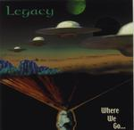

| Artist: | Legacy |
| Title: | ...Where We Go |
| Label: | self produced |
| Length(s): | 41 minutes |
| Year(s) of release: | 2000 |
| Month of review: | [01/2001] |
| 1) | Take A Look At Yourself | 5.39 |
| 2) | Choices | 6.02 |
| 3) | West World: Object Of Desire | 7.26 |
| 4) | Trappings: Ocean Of Light/cosmic Waltz | 8.31 |
| 5) | The Power | 4.29 |
| 6) | Time Travellers | 3.38 |
| 7) | No Where To Run: Trois Theme | 5.45 |
Weird keyboard sounds open Choices. The vocal part that follows is very mellow, however the vocal melody is good. In the transition to the rather weak bouncy chorus the bombastic keyboards take over and here it seems the sound is a bit crackly. The bombastic part I did enjoy and the melodramatic verses are fine with me too, but the chorus is simply too bouncy and sounds unnatural here.
Piano opens West World: Object Of Desire. I have the idea that West World is the instrumental predecessor of Object Of Desire, but they are compiled into one track. Hence West World would be the somewhat moody part in which we also hear some rolls on the electronic drums (a bit unnatural). Only after more than three minutes do we move into something quite different. The music becomes much more subdued, until the rather easy-going vocal part starts. After a nice melodic intermezzo the vocal part returns and the song ends with a cliche classical ending on piano.
Trappings is the first part of three in the next over 8 minutes. The music has a nice pace and quite a good and distinctive melody. Wierdly enough Hartis sounds rather like Phil Collins here, especially in the Lonely Man part. The guitar work dominates in this track that reminds me in style of Wind And Wuthering. This part is followed by some cosmic keyboards, but then the music becomes quite friendly and bouncy. This is more an electronic kind of music and maybe a bit too friendly and easy-going.
The Power is up next. After a simple vocal opening, the music becomes quite involved with heavy percussion and dito keyboards. I am reminded of some of the more quirky tracks of Jarre. The break back into the loud and emotional vocal parts is then somewhat unnatural (as is again the drum sound, something they should look into).
Time Travelers is a short friendly instrumental with quite a bit of change melodically. The music is a bit waltz like and classical in structure. Again, more typical of an electronic musician than a progressive rock band. The strings sound a bit thin.
The closer is Nowhere To Run: Trois Theme. The first of these is a vocal part very good when Hartis shows the back of his tongue. He doesn't do this often to it comes out better when he does. The following melodic intermezzo is a bit too bouncy and classical for my tastes. Maybe they like Mozart? The female backing vocals with Hartis singing is quite effective. Trois Themes is a mellow goodbye to the music on this album.
The sound quality seems okay at first, but in some places during the louder moments I hear some distortion.